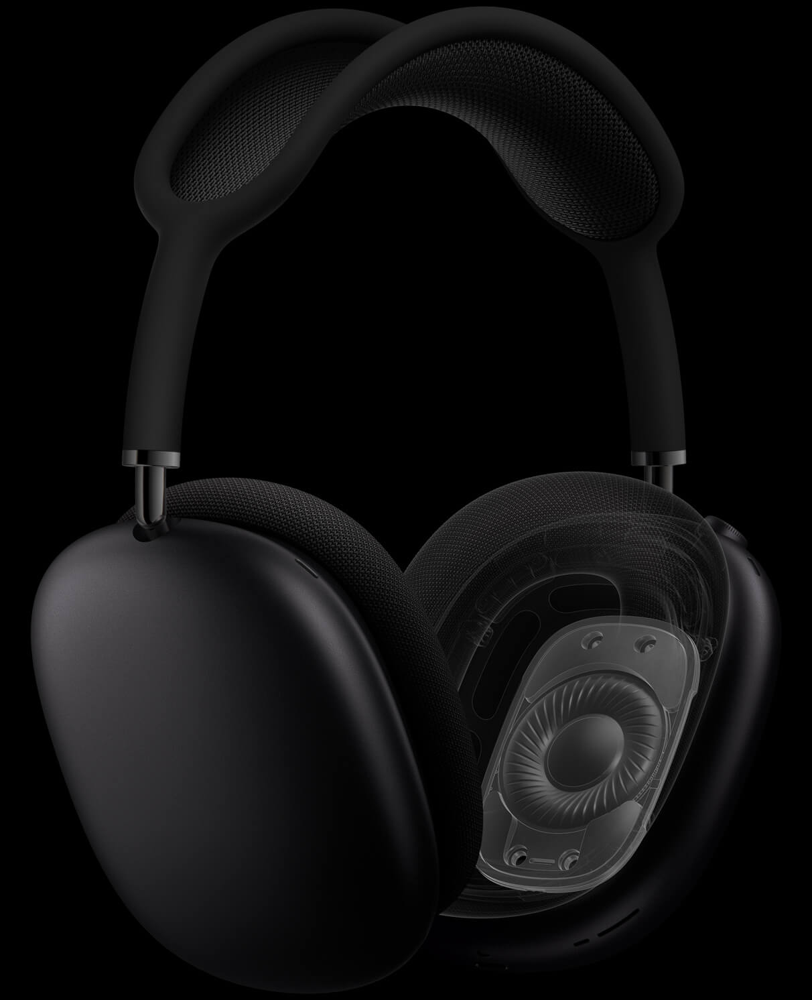

Immersive listening
To cancel unwanted external sound, AirPods Max use a total of six outward-facing microphones to detect noise in your environment, and two inward-facing microphones to measure what you're hearing. Beamforming microphones help isolate your voice on phone calls, so it's heard clearly — even in windy situations.
Hear every detail
The Apple-designed dynamic driver produces a wide frequency range that uncovers the rich details of every sound — delivering your favorite songs with previously unheard texture and accuracy.
Distortionless playback
Modeled after those in high-end floor-standing speakers, the driver's dual-neodymium ring magnet motor minimizes total harmonic distortion across the entire audible range. The result is consistently clear playback, even at full volume.